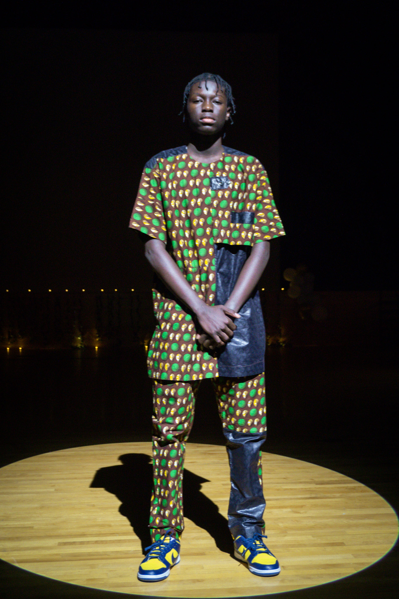
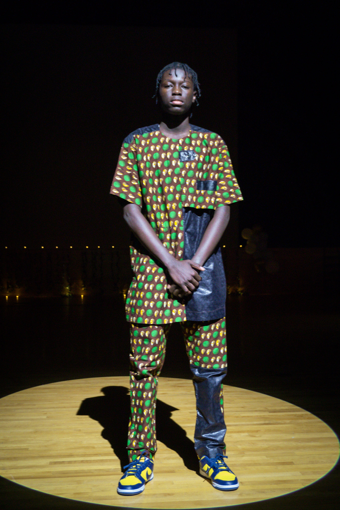
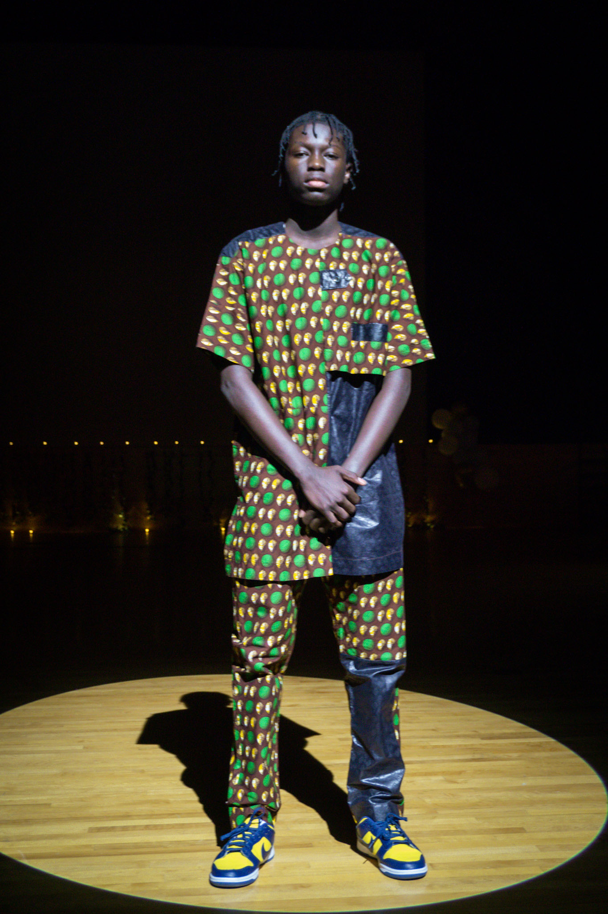
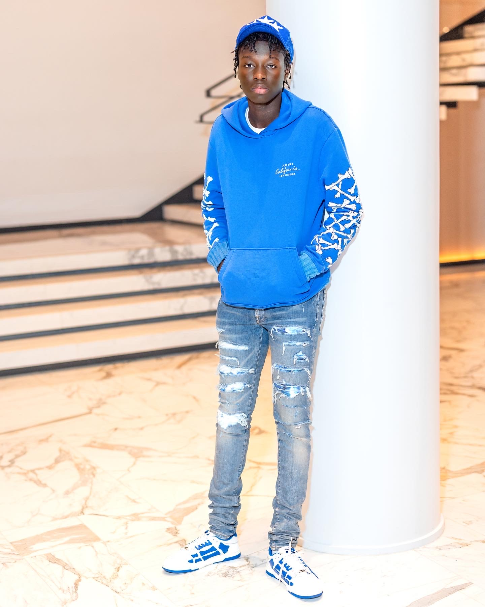
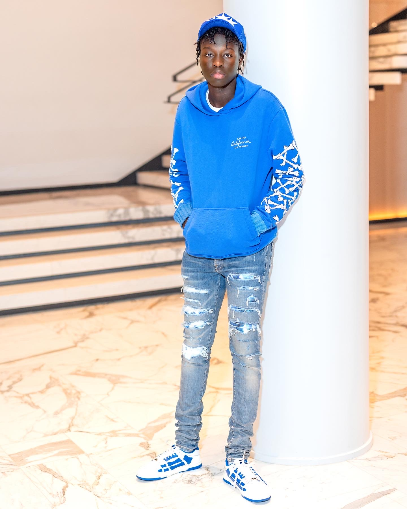

I was a general body member of African Student Union and luckily, I was convinced enought to step out of my comfort zone. I auditioned and was accepted to participate in a annual fashion show for ASU and it turned out great. The entire experience was worthwhiile from meeting new people to rehearsing with them to mastering different flows of model. It all came out great and here is my two favorite images of me from this successful event:
(10.08.2022)

By the time of the 18th birthday, I had a lot of experience with this fashion style that I was aiming for since 2020. A lot of the colors I chose in the years prior were primarily black and white. Blue has always been my favorte color though, so I wanted to change up the color idea. This outfit was the most outfit I wore and I feel like it's a great way to inhibit my progress over the years. I even decided to purchase Louis Vuitton sunglassees which added a great touch to the picture.
Overall, I am very proud of the evolution it took to arrive to this point in my fashion journey. I hope to be able to pursue a fashion gig later in my career and be noticed for my creativity in my New York like-fashion.
(12.31.2022)
.jpg)
.jpg) 

.jpg)